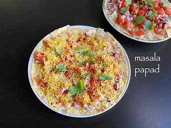

Masala Papad
~Vaishnavi Bhadrashette

Ingredients
•2 large urad dal papads
•1 medium onion, finely chopped or ½ cup finely chopped onion
•1 medium tomato, finely chopped or ½ cup finely chopped tomatoes
•2 tbsp chopped coriander/dhania
•1 tsp lime or lemon juice or add as requried
•1 cup fine sev
•1 tsp chilli powder
•salt as required
•enough oil for shallow frying papads
•Chat Masala as required (optional)
Recipe-
1. take the papad. optionally if you do not have large one, use smaller one.
2. heat oil for deep frying in a pan and slid the papad into the hot oil.
3. fry for some seconds till the papad is crisp.
4. with a tong remove the papad from the oil.
5. place the fried papad on a paper napkin towel so that excess oil is absorbed.
6. place the papad in a plate and add finely chopped onion and tomato on top of the papad
7. sprinkle chilli powder, chat masala(optional) and salt on top of the papad
8.squeeze the lemon on top of papad
9. sprinkle chopped coriander leaves.
10. And finally, add nylon or fine sev on top of the papad
NOTE: Serve masala papad immediately or else they turn soggy.
Back to Categories (श्रेणियों में वापस)
Back to Recipes (व्यंजनों पर वापस जाएं)